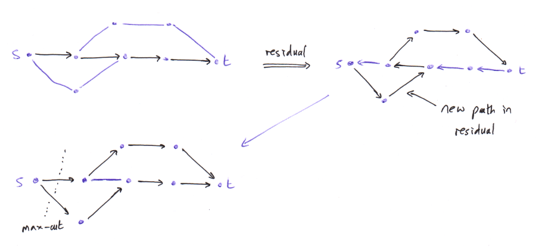
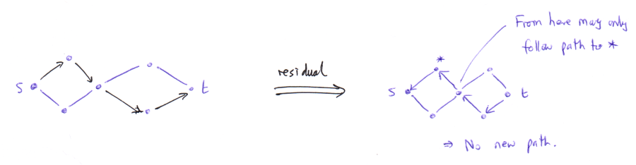
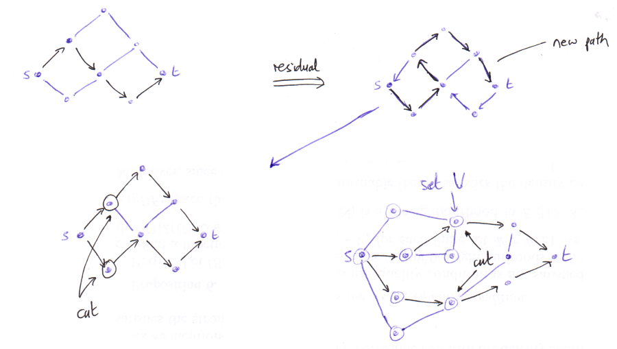

Disjoint Paths
Posted on 8th June 2015
A few notes on paths in graphs: finding the maximum number of edge/vertex disjoint paths, and an application to finding disconnections.
Edge disjoint paths
Consider a graph, for the moment undirected. We wish to find the maximum number of edge disjoint paths from a fixed vertex \(s\) to a fixed vertex \(t\). We can do this with the Max-Flow Min-Cut theorem and the Ford-Fulkerson algorithm, at least in the directed case, but let's specialise this to our case.
Suppose we have \(k\) edge-disjoint paths from s to t. We form a "residual graph" by taking the given graph, and then implement each path backwards (so from t to s) as directed edges. So in the residual graph some edges are directed, and some are undirected. Find (using a depth/breath first search, for example) if possible a path from s to t in the residual graph (if we use directed edges then our path must respect these).
- If we can find a path, then we add it into our collection of paths s to t as follows: if we use a directed edge, then this will be deleted in our collection. Other edges will be entered into our collection (if we wish, as directed edges, in the direction they are used in our path). Some thought will show that we end up with \(k+1\) edge disjoint paths from s to t.
- Otherwise, if there is no path s to t in the residual graph, then we claim that \(k\) is the maximum number of edge-disjoint paths s to t. We shall do this by proving a version of the max-flow min-cut theorem in this setting; the claim is that \(k\) is also the minimum number of edges we can remove to disconnect s from t.
- It's easy to see that if we can remove \(n\) edges and disconnect s from t then there are at most \(n\) edge-disjoint paths from s to t.
- Conversely, construct a maximal set of edge-disjoint paths, say \(k\), and define a set \(S\) as follows. Firstly, \(s\in S\). Then, inductively, if \(v\in S\) and there is an edge \(v--u\) which is either unused by our collection of paths, or which is used in the direction \(u\rightarrow v\), then add \(u\in S\). Notice that in the end \(S\) is precisely the set of vertices we can reach from s in the residual graph. Thus \(t\not\in S\). Let our "cut" be the collection of edges with one vertex in \(S\) and the other vertex not in \(S\). As \(t\not\in S\), any path from s to t must contain some edge in the cut. By definition, if \(v\in S, u\not\in S\) then the edge \( v\rightarrow u\) must appear in one of our paths. As the paths are edge-disjoint, the size of the cut is at most \(k\), as claimed.

If our original graph was directed, then we apply the same algorithm, but anywhere before we had an undirected edge in the residual graph, we now instead have a directed edge as in the original graph. (Note, however, that we still reverse the direction of edges which are in one of our current paths: this is to allow us to "un-flow" the flow which is in this path, if necessary.)
Vertex disjoint paths
Now suppose we wish to tackle the same problem, but for vertex disjoint paths. One way is to "encode" this problem as an edge-disjoint path problem. For all vertices except the vertices s and t, split the vertex \(v\) into \(v_{in}, v_{out}\) with an edge \( v_{in} \rightarrow v_{out} \). If we had an edge \( u--v\) in the original graph, this gets converted to two directed edges \( u_{out} \rightarrow v_{in}, v_{out}\rightarrow u_{in}\). If the original graph was directed, then just implement the one new directed edge as appropriate. This construction ensures that any path "using" the vertex \(v\) in the original graph must use the edge \( v_{in} \rightarrow v_{out} \) in the new graph. We have thus converted the original vertex disjoint problem to an edge disjoint problem.
By thinking about what the Ford-Fulkerson algorithm does in the new graph, we can formulate an algorithm just in terms of the original graph:
- Again, we have some collection of vertex-disjoint paths, and again we form the residual graph.
- We now seek a path s to t in the residual graph, but with the following new constraint: if one of our paths used an edge \( u\rightarrow v\), then this occurs as \( v\rightarrow u\) in the residual graph, and we may still use this edge in our path.
- However, this is the only way we are allowed to use any vertex which occurs in our collection of vertex-disjoint paths.
- See below for more notes on what this means.
- (In the derived edge-disjoint problem, if we have used a vertex \(v\), then in the residual graph we have an edge \(v_{out}\rightarrow v_{in}\) and the only way to get to an "out" vertex is to get to an "in" vertex before it in the residual graph: this corresponds to using an edge in one of our existing paths.)

- Again, let us prove a max-flow min-cut theorem in this setting. The statement becomes that the maximum number of vertex-disjoint paths s to t is equal to the minimal number of vertices to remove which disconnects s from t.
- Again, "min-cut" is clearly greater than or equal to "max-flow".
-
Conversely, construct a maximal collection of vertex-disjoint paths and form the residual graph. In the residual graph there is no path from s to t. Let \(V\) be the set of all vertices we can reach in the residual graph.
- Let us be a little careful about this.
- If we can get to a vertex v and v is not used by one of our paths, we can continue on to any neighbour of v.
- If we can get to a vertex v which is used by a path, but the predecessor was not in a path, then we must now follow the path backwards.
- If we are already following a path backwards, then we are allowed to "jump off" to any neighbour.
- Notice that this makes our search for a new path a little tricky, as we need to remember not just which vertices we can get to, but also how we got to them.
-
Now let the cut be the set of vertices in \(V\) which have a neighbour not in \(V\). If it ends up that s is in our cut, then, in the cut, replace s by any neighbours of s not in \(V\). By definition, if v is in the cut and u is a neighbour of v, then either:
- The edge \( v\rightarrow u \) occurs in one of our paths; or
- v occurs in a path and there is no vertex further on in that path which we can reach (so we cannot travel to u from v.)
-
Thus in either case v occurs in a path and as the paths are vertex-disjoint, we see that the cut is at most the size of the number of paths, as required.
- Is our "cut" actually a cut? That is, does it disconnect s from t? As \(s\in V, t\not\in V\) any path from s to t will have an edge with one vertex in V and the other not, and thus a vertex in the cut.
- There is a small corner case: s is a neighbour of t! In fact this case breaks our algorithm, so one should check for it.
Below is a diagram showing the construction of the residual, finding a new path, and then finding a cut. The bottom-right graph shows finding the cut in a more complicated setting.

Application to dis-connections
Suppose we have vertices s, t and we wish to know the minimal number of vertices to remove to disconnect s from t.
- Is s is a neighbour of t, then if this case is even allowed, we have no choice but to remove one of s or t.
- Otherwise, we apply the above algorithm to find the maximal number of vertex-disjoint paths from s to t.